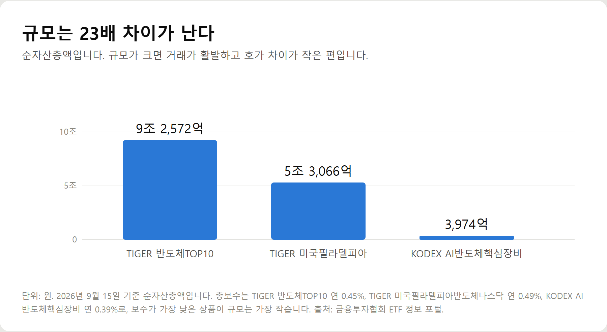
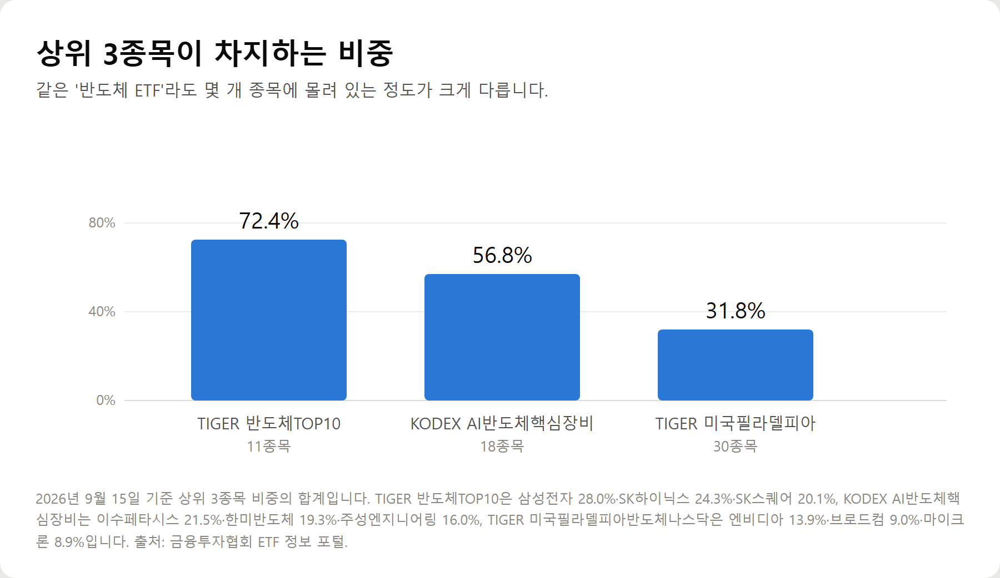
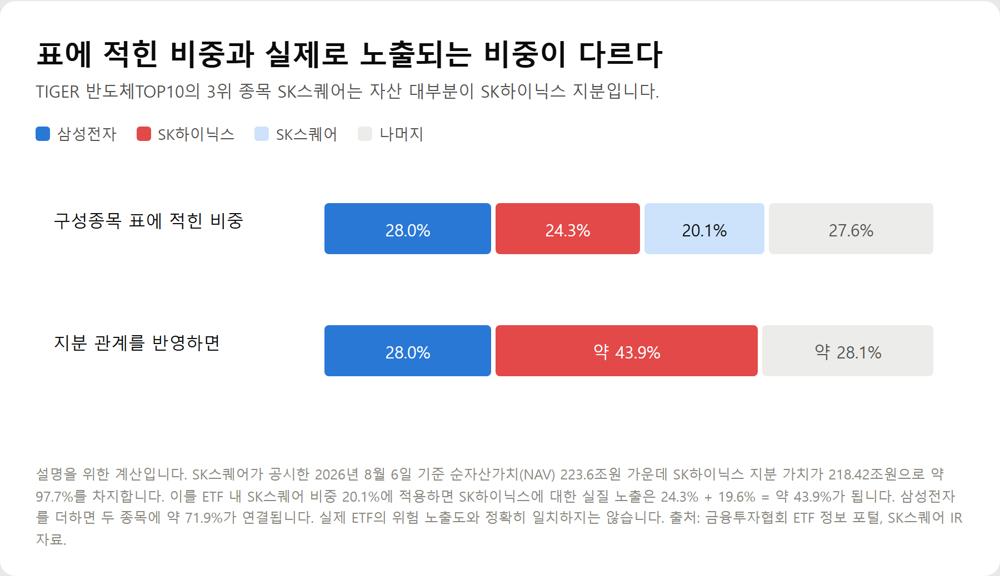
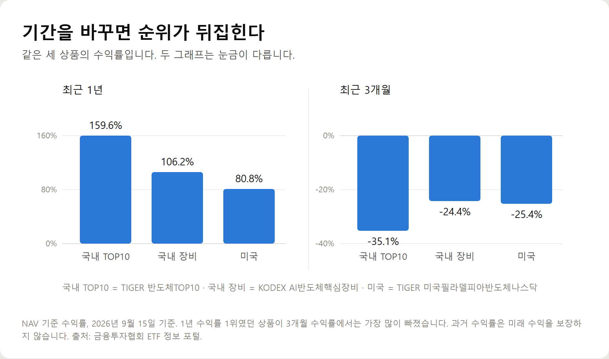

<meta charset="utf-8">
<title>반도체 ETF 3종, 열어보면 다른 상품이다 — 나의 투자 그리고 행복한 여행</title>
<meta name="description" content="반도체 ETF 3종 비교 — TIGER 반도체TOP10·KODEX AI반도체핵심장비·TIGER 미국필라델피아반도체나스닥의 총보수, 순자산, 상위 구성종목, 1년·6개월·3개월 수익률을 2026년 9월 15일 기준으로 정리했습니다.">
<meta name="viewport" content="width=device-width, initial-scale=1">
<link rel="canonical" href="https://danielmoon82.github.io/moon/posts/chipetf-2026-09-16.html">
<link rel="preconnect" href="https://fonts.googleapis.com">
<link rel="preconnect" href="https://fonts.gstatic.com" crossorigin>
<link rel="stylesheet" href="https://fonts.googleapis.com/css2?family=Hahmlet:wght@400;600;800&family=IBM+Plex+Mono:wght@400;500&family=IBM+Plex+Sans+KR:wght@300;400;500;600&display=swap">

<style>
  :root{
    --paper:#F2EEE6;--surface:#FAF8F3;--surface-2:#E7E1D5;
    --ink:#191510;--ink-2:#4A4235;--ink-3:#7D7364;
    --line:#D6CEBF;--line-soft:#E4DDD0;--accent:#B06A15;--accent-bright:#C2761A;
    --up:#E5484D;--down:#3B82F6;
    --f-display:"Hahmlet",'Nanum Myeongjo',"Apple SD Gothic Neo",serif;
    --f-body:"IBM Plex Sans KR","Apple SD Gothic Neo","Malgun Gothic",sans-serif;
    --f-mono:"IBM Plex Mono","SFMono-Regular",Consolas,monospace;
    --pad:clamp(20px,5vw,64px);
  }
  @media (prefers-color-scheme:dark){
    :root:not([data-theme="light"]){
      --paper:#0B1120;--surface:#121A2C;--surface-2:#1A2439;
      --ink:#E9EEF7;--ink-2:#A9B5C9;--ink-3:#72809A;
      --line:#26314A;--line-soft:#1D2739;--accent:#E8A33D;--accent-bright:#F0B45C;
    }
  }
  *{box-sizing:border-box;}
  body{margin:0;background:var(--paper);color:var(--ink);font-family:var(--f-body);
    font-weight:300;font-size:1rem;line-height:1.75;-webkit-font-smoothing:antialiased;}
  a{color:inherit;}
  img{max-width:100%;height:auto;}
  .wrap{max-width:760px;margin:0 auto;padding-inline:var(--pad);}
  .nav{position:sticky;top:0;z-index:20;background:color-mix(in srgb,var(--paper) 88%,transparent);
    backdrop-filter:saturate(180%) blur(12px);border-bottom:1px solid var(--line);}
  .nav-in{display:flex;align-items:center;justify-content:space-between;height:58px;}
  .brand{font-family:var(--f-display);font-weight:600;font-size:1rem;letter-spacing:-.02em;text-decoration:none;}
  .back{font-family:var(--f-mono);font-size:.72rem;color:var(--ink-3);text-decoration:none;}
  .article{padding-block:clamp(40px,7vw,72px) clamp(56px,9vw,96px);}
  .eyebrow{font-family:var(--f-mono);font-size:.68rem;letter-spacing:.16em;text-transform:uppercase;
    color:var(--accent);margin:0 0 14px;}
  h1{font-family:var(--f-display);font-weight:800;font-size:clamp(1.6rem,4.4vw,2.3rem);
    line-height:1.3;letter-spacing:-.03em;margin:0 0 16px;}
  .byline{font-family:var(--f-mono);font-size:.72rem;color:var(--ink-3);
    padding-bottom:24px;border-bottom:1px solid var(--line);margin-bottom:32px;}
  h2{font-family:var(--f-display);font-weight:600;font-size:1.25rem;letter-spacing:-.02em;margin:42px 0 14px;}
  h3{font-family:var(--f-display);font-weight:600;font-size:1.05rem;letter-spacing:-.02em;
    margin:30px 0 10px;padding-top:14px;border-top:1px solid var(--line-soft);}
  h3 .code{font-family:var(--f-mono);font-size:.7rem;font-weight:400;color:var(--ink-3);margin-left:6px;}
  p{margin:0 0 18px;color:var(--ink-2);}
  ul.checks{margin:0 0 18px;padding-left:20px;color:var(--ink-2);}
  ul.checks li{margin-bottom:8px;font-size:.94rem;}
  table{width:100%;border-collapse:collapse;font-size:.88rem;margin-bottom:8px;}
  th{font-family:var(--f-mono);font-size:.66rem;letter-spacing:.06em;text-transform:uppercase;
    color:var(--ink-3);text-align:right;padding:8px 6px;border-bottom:1px solid var(--line);}
  th:first-child{text-align:left;}
  td{padding:10px 6px;border-bottom:1px solid var(--line-soft);color:var(--ink-2);}
  td.num{font-family:var(--f-mono);text-align:right;font-variant-numeric:tabular-nums;}
  td.up{color:var(--up);} td.down{color:var(--down);}
  .scroll{overflow-x:auto;}
  figure{margin:22px 0;}
  figure img{display:block;border-radius:3px;background:var(--surface-2);}
  figcaption{margin-top:8px;font-family:var(--f-mono);font-size:.68rem;color:var(--ink-3);text-align:center;}
  .note{margin-top:34px;padding:16px 18px;border-left:3px solid var(--accent);
    background:var(--surface);border-radius:0 3px 3px 0;}
  .note p{margin:0;font-size:.85rem;color:var(--ink-3);}
  .foot{border-top:1px solid var(--line);background:var(--surface);padding-block:30px 38px;}
  .foot p{margin:0;font-size:.8rem;color:var(--ink-3);}
</style>

<nav class="nav">
  <div class="wrap nav-in">
    <a class="brand" href="../index.html">나의 투자 그리고 행복한 여행</a>
    <a class="back" href="../index.html#stocks">← 시황으로</a>
  </div>
</nav>

<main class="wrap article">
  <p class="eyebrow">Market</p>
  <h1>반도체 ETF 3종 비교 정리 — 보수·순자산·구성종목·기간별 수익률 (2026년 9월)</h1>
  <p class="byline">주식 · 2026-09-16 기준</p>

  <p>한 줄 요약: TIGER 반도체TOP10(0.45%·9.26조), KODEX AI반도체핵심장비(0.39%·3,974억), TIGER 미국필라델피아반도체나스닥(0.49%·5.31조)을 같은 기준일(2026년 9월 15일)로 비교했습니다.</p>
  <p>상위 3종목 비중은 각각 72.4% / 56.8% / 31.8%, 최근 1년 수익률은 159.63% / 106.23% / 80.83%, 최근 3개월은 -35.14% / -24.37% / -25.35%입니다. SK스퀘어 지분 관계를 반영한 실질 SK하이닉스 노출 계산도 함께 기록했습니다.</p>
  <h2>핵심만 먼저</h2>
  <ul class="checks">
    <li>국내 대형주형 — TIGER 반도체TOP10. 삼성전자·SK하이닉스에 집중, 순자산 9조 2,572억, 총보수 연 0.45%</li>
    <li>국내 장비형 — KODEX AI반도체핵심장비. 소재·부품·장비 18종목, 순자산 3,974억, 총보수 연 0.39%</li>
    <li>미국형 — TIGER 미국필라델피아반도체나스닥. 엔비디아 등 30종목, 순자산 5조 3,066억, 총보수 연 0.49%</li>
    <li>집중도 — 상위 3종목 비중이 각각 72.4% / 56.8% / 31.8%로 크게 다릅니다</li>
    <li>수익률 — 1년은 159.63% / 106.23% / 80.83%, 3개월은 -35.14% / -24.37% / -25.35%</li>
  </ul>
  <p>아래 수치는 모두 2026년 9월 15일 기준이며, 금융투자협회 ETF 정보 포털과 각 운용사 공식 자료에서 확인한 값입니다.</p>
  <h2>1. 세 상품을 한 줄로 구분하면</h2>
  <ul class="checks">
    <li>TIGER 반도체TOP10(396500) — 국내 반도체 대표 기업 소수에 집중합니다. 사실상 삼성전자와 SK하이닉스를 담는 상품에 가깝습니다</li>
    <li>KODEX AI반도체핵심장비(471990) — 두 대기업에 장비와 부품을 납품하는 회사들을 담습니다. HBM과 온디바이스 AI 관련 기업 중심입니다</li>
    <li>TIGER 미국필라델피아반도체나스닥(381180) — 미국 증시에 상장된 반도체 30종목에 투자합니다. 엔비디아·브로드컴·마이크론이 상위입니다</li>
  </ul>
  <p>같은 산업이지만 투자 대상이 겹치지 않습니다. 국내 대형주와 국내 장비주는 실적이 연결돼 있고, 미국형은 아예 다른 기업군입니다.</p>
  <h2>2. 기본 정보 한눈에 보기</h2>
  <figure><figcaption>반도체 ETF 3종 순자산총액 비교 (2026년 9월 15일 기준, 단위: 원)</figcaption></figure>
  <ul class="checks">
    <li>상장일 — TIGER 반도체TOP10 2021년 8월 10일 / KODEX AI반도체핵심장비 2023년 11월 21일 / TIGER 미국필라델피아반도체나스닥 2021년 4월 9일</li>
    <li>순자산 — 9조 2,572억 / 3,974억 / 5조 3,066억</li>
    <li>총보수(연) — 0.45% / 0.39% / 0.49%</li>
    <li>구성종목 수 — 11개 / 18개 / 30개(각각 현금 포함)</li>
    <li>기초지수 — FnGuide 반도체TOP10 / iSelect AI반도체핵심장비 / PHLX Semiconductor Sector Index</li>
  </ul>
  <p>보수가 가장 낮은 상품이 규모는 가장 작습니다. 규모가 크면 거래가 활발해 사고팔 때 호가 차이가 작은 편이고, 규모가 작으면 보수를 아껴도 체결 과정에서 손해를 볼 수 있습니다. 보수만 보고 고르면 안 되는 이유입니다.</p>
  <h2>3. 무엇을 담고 있나 — 쏠린 정도가 다르다</h2>
  <p>이름은 모두 반도체지만 분산 정도는 완전히 다릅니다.</p>
  <figure><figcaption>반도체 ETF 3종 상위 3종목 비중 합계 (2026년 9월 15일 기준, 단위: %)</figcaption></figure>
  <ul class="checks">
    <li>TIGER 반도체TOP10 — 삼성전자 28.0%, SK하이닉스 24.3%, SK스퀘어 20.1%로 상위 3종목이 72.4%입니다. 이어서 한미반도체 6.4%, 주성엔지니어링 5.3%, 이수페타시스 4.7% 순입니다</li>
    <li>KODEX AI반도체핵심장비 — 이수페타시스 21.5%, 한미반도체 19.3%, 주성엔지니어링 16.0%로 상위 3종목이 56.8%입니다. 대덕전자 9.4%, 심텍 8.0%, 이오테크닉스 7.3%가 뒤를 잇습니다</li>
    <li>TIGER 미국필라델피아반도체나스닥 — 엔비디아 13.9%, 브로드컴 9.0%, 마이크론 8.9%로 상위 3종목이 31.8%입니다. 4위 이하는 마벨 5.0%, TSMC 4.6%, ASML 4.5%, AMD 4.4% 등으로 고르게 퍼져 있습니다</li>
  </ul>
  <p>종목 수가 11개인데 상위 3개가 72%라면, 나머지 8개는 전부 합쳐도 28%가 안 됩니다. 분산을 기대하고 샀다면 기대와 다를 수 있습니다.</p>
  <h2>4. 표에 적힌 비중이 전부가 아닙니다</h2>
  <p>이 글에서 가장 짚고 싶은 부분입니다. TIGER 반도체TOP10의 3위 종목 SK스퀘어는 일반적인 사업회사가 아닙니다.</p>
  <figure><figcaption>TIGER 반도체TOP10의 명목 비중과 지분 관계를 반영한 실질 노출 (설명용 계산)</figcaption></figure>
  <p>SK스퀘어는 SK텔레콤에서 인적분할해 출범한 투자 지주회사로, SK하이닉스 지분 20.5%를 가진 최대주주입니다. 회사가 공시한 2026년 8월 6일 기준 순자산가치 223.6조원 가운데 SK하이닉스 지분 가치가 218.42조원입니다. 약 97.7%입니다.</p>
  <p>즉 SK스퀘어를 담는다는 것은 사실상 SK하이닉스를 간접적으로 한 번 더 담는 셈입니다. ETF 내 SK스퀘어 비중 20.1%에 이 비율을 적용하면 SK하이닉스에 연결된 실질 비중은 24.3%에 19.6%를 더해 약 43.9%가 됩니다.</p>
  <p>삼성전자 28.0%까지 더하면 두 종목에 약 71.9%가 묶입니다. 이 계산은 설명을 위한 추정이고 ETF의 실제 위험 노출도와 정확히 같지는 않지만, 방향은 분명합니다.</p>
  <p>반대로 보면 이 상품은 처음부터 '국내 반도체 두 회사에 베팅하는 도구'로 설계된 셈입니다. 그 사실을 알고 사는 것과 모르고 사는 것은 다릅니다.</p>
  <h2>5. 기간을 바꾸면 순위가 뒤집힌다</h2>
  <p>수익률 표를 볼 때 기간 하나만 보면 판단을 그르칩니다.</p>
  <figure><figcaption>반도체 ETF 3종 최근 1년·3개월 수익률 (NAV 기준, 2026년 9월 15일)</figcaption></figure>
  <ul class="checks">
    <li>최근 1년 — TIGER 반도체TOP10 +159.63%, KODEX AI반도체핵심장비 +106.23%, TIGER 미국필라델피아반도체나스닥 +80.83%</li>
    <li>최근 6개월 — +7.89%, -1.83%, +31.94%</li>
    <li>최근 3개월 — -35.14%, -24.37%, -25.35%</li>
  </ul>
  <p>1년 수익률 1위가 3개월 수익률에서는 가장 많이 빠졌습니다. 6개월로 보면 미국형이 가장 좋습니다. 기간을 어디서 끊느냐에 따라 세 상품의 순위가 모두 달라집니다.</p>
  <p>변동성이 큰 섹터일수록 이런 현상이 심합니다. 1년 수익률만 보고 들어가면 이미 많이 오른 구간에 진입할 위험이 있고, 3개월만 보면 반대로 흐름을 놓칠 수 있습니다. 최소 세 구간을 함께 보는 습관이 필요합니다.</p>
  <p>과거 수익률은 미래 수익을 보장하지 않습니다. 이 표는 상품을 고르는 근거가 아니라 변동성의 크기를 가늠하는 자료로 보는 것이 맞습니다.</p>
  <h2>6. 미국형에만 붙는 변수 — 환율</h2>
  <p>TIGER 미국필라델피아반도체나스닥은 환헤지를 하지 않습니다. 운용사도 기준가격이 기초지수의 원화 환산 수익률에 연동된다고 밝히고 있습니다.</p>
  <p>주가가 올라도 원화가 강해지면 원화로 환산한 수익은 줄어듭니다. 반대로 원화가 약해지면 환차익이 더해집니다. 미국 주식에 투자하는 국내 상장 ETF를 고를 때 상품명에 (H)가 붙어 있는지 확인해야 하는 이유입니다.</p>
  <p>국내 두 상품은 원화 자산이라 이 변수가 없습니다. 대신 국내 기업 실적이 환율에 영향을 받는 간접 효과는 남습니다.</p>
  <h2>7. 총보수 0.1%p는 실제로 얼마인가</h2>
  <p>세 상품의 총보수는 0.39%, 0.45%, 0.49%입니다. 숫자만 보면 작지만 금액으로 바꿔 보면 감이 옵니다.</p>
  <ul class="checks">
    <li>1,000만원을 1년 보유할 때 — 0.39%는 3만 9,000원, 0.45%는 4만 5,000원, 0.49%는 4만 9,000원</li>
    <li>가장 싼 것과 가장 비싼 것의 차이 — 1년에 1만원</li>
    <li>5,000만원이라면 — 각각 19만 5,000원, 22만 5,000원, 24만 5,000원</li>
  </ul>
  <p>보수는 매일 조금씩 기준가격에서 빠지기 때문에 따로 청구되지 않습니다. 대신 보유 기간이 길수록 차이가 쌓입니다. 짧게 보유할 계획이라면 보수보다 거래 편의와 규모가 더 중요하고, 연금계좌처럼 길게 둘 자금이라면 보수 차이를 따져볼 만합니다.</p>
  <h2>8. 이런 분에게 맞고, 이런 분에게는 안 맞습니다</h2>
  <ul class="checks">
    <li>국내 대형주형이 맞는 경우 — 삼성전자·SK하이닉스를 개별로 사는 대신 한 번에 담고 싶을 때. 두 종목에 집중된다는 점을 받아들일 수 있어야 합니다</li>
    <li>국내 장비형이 맞는 경우 — 대형주보다 변동성이 크더라도 설비 투자 흐름에 더 직접적으로 올라타고 싶을 때. 규모가 작다는 점은 감안해야 합니다</li>
    <li>미국형이 맞는 경우 — 특정 기업 쏠림을 줄이고 글로벌 반도체 전반에 분산하고 싶을 때. 환율 변동을 감수해야 합니다</li>
    <li>셋 다 맞지 않는 경우 — 원금 손실을 감당하기 어려운 자금이거나, 3개월에 20~35% 하락을 견디기 어려운 경우입니다</li>
  </ul>
  <h2>9. ISA·연금계좌로 담을 때</h2>
  <p>국내 상장 ETF는 ISA와 연금저축·IRP 계좌에서도 매매할 수 있습니다. 세제 혜택 때문에 이쪽으로 담는 사람이 계속 늘고 있습니다.</p>
  <p>증권사 ISA 가입자는 2026년 7월 말 989만 8,127명으로 1년 전 642만 2,170명에서 347만 명 넘게 늘었습니다. 투자 금액도 41조 4,735억원에서 75조 4,085억원으로 증가했고, 이 가운데 76%가 직접 매매가 가능한 투자중개형입니다.</p>
  <p>다만 계좌마다 담을 수 있는 상품과 한도가 다릅니다. 레버리지·인버스처럼 파생상품 위험평가액 비중이 높은 ETF는 퇴직연금 계좌에서 매수가 제한됩니다. 계좌를 열기 전에 해당 증권사에서 매수 가능 상품인지 확인하는 편이 확실합니다.</p>
  <p>세제 혜택 내용은 제도 변경 논의에 따라 바뀔 수 있으므로, 가입 시점의 공식 안내를 기준으로 확인하세요.</p>
  <h2>자주 묻는 질문</h2>
  <p>Q. 반도체 ETF 중 어떤 게 제일 좋나요?</p>
  <p>목적이 다른 상품이라 우열을 가릴 수 없습니다. 국내 두 대기업에 집중하려면 대형주형, 장비·부품 흐름을 타려면 장비형, 글로벌 분산을 원하면 미국형입니다. 다만 집중도와 환율 변수는 반드시 확인해야 합니다.</p>
  <p>Q. 총보수가 낮은 상품이 무조건 유리한가요?</p>
  <p>아닙니다. 1,000만원 기준으로 가장 싼 상품과 비싼 상품의 차이는 1년에 약 1만원입니다. 순자산 규모가 작아 거래가 뜸하면 사고팔 때 생기는 호가 차이가 그보다 클 수 있습니다.</p>
  <p>Q. TIGER 반도체TOP10은 몇 종목에 투자하나요?</p>
  <p>현금을 포함해 11개입니다. 다만 상위 3종목(삼성전자 28.0%, SK하이닉스 24.3%, SK스퀘어 20.1%)이 72.4%를 차지합니다.</p>
  <p>Q. 미국 반도체 ETF는 환헤지가 되나요?</p>
  <p>TIGER 미국필라델피아반도체나스닥은 환헤지를 하지 않습니다. 원화가 강세면 원화 환산 수익률이 줄어듭니다. 환헤지 상품은 보통 이름 뒤에 (H)가 붙습니다.</p>
  <p>Q. 연금계좌에서도 살 수 있나요?</p>
  <p>국내 상장 ETF는 ISA와 연금저축·IRP에서 매매할 수 있습니다. 다만 레버리지·인버스 등 파생상품 위험평가액 비중이 높은 상품은 퇴직연금 계좌에서 제한되므로 증권사에서 확인해야 합니다.</p>
  <h2>정리하면</h2>
  <p>세 상품 모두 반도체라는 이름을 달고 있지만, 담는 기업도 쏠린 정도도 다릅니다. 국내 대형주형은 상위 3종목이 72.4%, 장비형은 56.8%, 미국형은 31.8%입니다.</p>
  <p>고를 때 볼 것은 세 가지입니다. 구성종목 상위 몇 개가 얼마를 차지하는지, 환헤지를 하는지, 그리고 수익률을 최소 세 구간으로 나눠 보는 것입니다.</p>
  <p>다음 글에서는 퇴직연금 계좌에서 ETF를 담을 때의 한도와 제한 상품을 정리하겠습니다.</p>
  <p><b>함께 보면 좋은 글</b> — <a href="https://danielmoon82.github.io/moon/posts/chip-2026-09-16.html">주가는 4% 빠졌는데 D램 값은 사상 최고, 반도체 사이클 읽는 법</a></p>
  <div class="note"><p>이 글은 공개된 공시·상품 자료를 정리한 정보이며 특정 상품의 매수나 매도를 권유하지 않습니다. 과거 수익률은 미래 수익을 보장하지 않으며, ETF는 원금 손실이 발생할 수 있습니다. 투자 판단과 그 결과의 책임은 투자자 본인에게 있습니다.</p></div>
  <p>※ 기준 시점: 2026년 9월 15일. 순자산·구성종목·수익률은 금융투자협회 ETF 정보 포털, 총보수·상장일·기초지수·환헤지 여부는 각 운용사 공식 상품 페이지에서 확인했습니다. SK스퀘어 순자산가치는 2026년 8월 6일 기준 회사 IR 자료, ISA 가입자 통계는 2026년 7월 말 기준으로 2026년 9월 15일 서울경제가 보도한 수치입니다. 실질 노출 비중은 설명을 위한 계산입니다.</p>
</main>

<footer class="foot">
  <div class="wrap"><p>나의 투자 그리고 행복한 여행 · 투자 판단의 참고 자료일 뿐, 매수·매도를 권유하지 않습니다.</p></div>
</footer>
